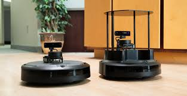
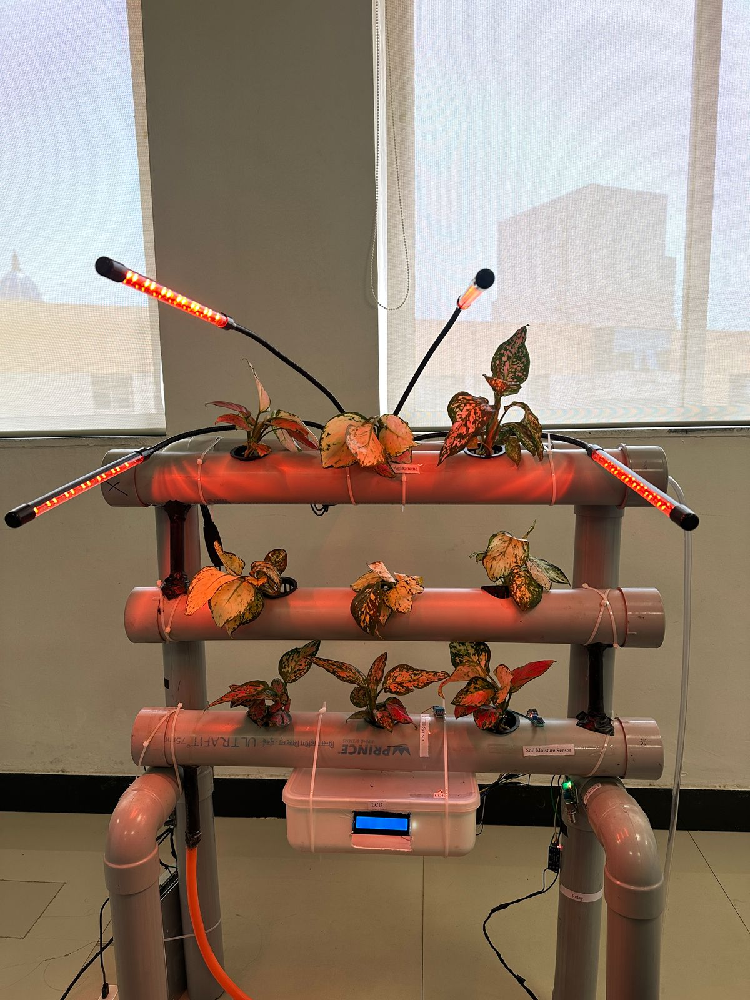
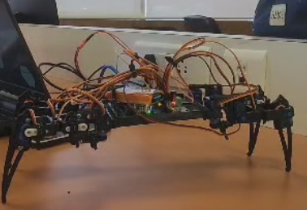
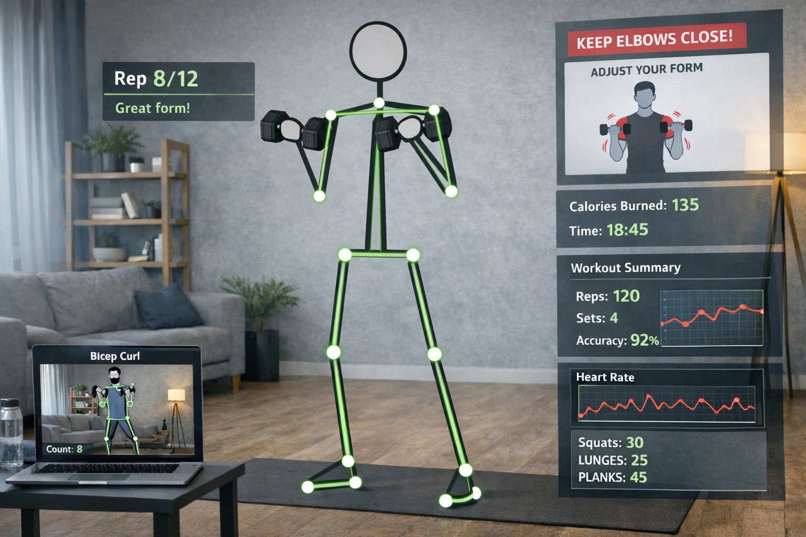

Impact in production
What I build
End to end systems, not just models
How I work
Engineering for the field, not the demo
Skills
Technologies and tools I specialize in
Experience
Engineering Brief & System Architectures
Built deployable perception and analytics systems across radar, cameras, ANPR, and production hardening.
Workstreams
Radar, Evidence & Camera-Radar Fusion
- Built a radar-triggered capture and enforcement loop with stable multi-target tracking and review-ready evidence packaging.
- Fused radar tracks with camera detections, projecting radar targets into the image plane and driving PTZ slew-to-target.
- Calibrated between radar and camera coordinate frames, combining radar range and velocity with detection for reliable target confirmation.
- Hardened reliability with watchdogs, health checks, and automated recovery for long-running field operation.
Multi-Camera Analytics: ANPR, Recognition & Edge Platform
- Built a single-process, single-GPU edge runtime that fans each camera stream into per-analytic threads over a shared model registry and inference client, with a REST control plane (start, stop, status, restart, backfill).
- Hardened multi-camera ingest and restreaming: RTSP handling, automatic reconnection, fallback behavior, and predictable frame access, with Kafka topic partitioning and Redis state sync.
- Delivered ANPR with high OCR correctness and dataset readiness (plate crops, character-ordering logic, verification flow, export quality), plus PTZ operational control per camera.
- Built a face-recognition and identity-registry service: operator enrollment (single and bulk), 1:N image search with ranked top-K, and watch-list matching with a full alert lifecycle.
- Ran concurrent analytics, crowd and safety (counting, pose, fall detection), abandoned-object detection, and person-attribute extraction, with tiled inference for small or distant objects.
MLOps & Platform
- Built and maintained Kafka-based service pipelines with debuggability and isolation.
- Implemented training lifecycle controls: pause, resume, cancel plus job state visibility.
- Improved dataset aggregation, annotation UX, and operational hygiene: cleanup and retention.
VLM & Retrieval
- Migrated CCTV VLM pipeline and instrumented per-stage latency.
- Implemented retrieval upgrade: semantic embeddings plus plate-aware search.
- Added prompt and token controls to keep latency bounded and predictable.
GIS & Command Centre
- Unified platform for real-time emergency response systems and automated dispatch workflows.
- Implemented high-precision radio device tracking and historical movement visualization.
- Built an integrated GIS dashboard for situational awareness and geofence-based alerting.
- Engineered a rule-based mission lifecycle engine for automated resource management.
Systems at a glance
Each block is a system I built — open it for the full breakdown above.
Systems, end to end
From sensor to dashboard — built to survive the field.
Radar, Evidence & Fusion
Radar-triggered enforcement with camera-radar fusion and PTZ slew-to-target.
Multi-Camera Analytics
ANPR, face recognition, and a multi-analytic edge runtime.
MLOps & Platform
Ingest → annotate → train → export, with job controls.
VLM & Retrieval
CCTV scene understanding with semantic, plate-aware search.
GIS & Command Centre
Real-time tracking, GIS dashboards, and dispatch lifecycle.
Domains
Traffic enforcement, surveillance networks & autonomy.
Field-deployed systems where reliability and evidence actually matter.
How I work
Reliability-first
Projects
Projects from my resume, with quick links and visuals




Education
Academic foundation and the coursework that shaped my build style
- Fundamentals of Robotics
- Introduction to Artificial Intelligence
- Advanced Python Lab
- Basics of Operating Systems (with lab)
- Sensor and Electronics Drives (with lab)
- Kinematics and Dynamics of Robotics (with lab)
- Robotic Control Systems (with lab)
- Robotics Operating System (with lab)
- Simulator for Robotics Lab
- Application of AI in Robotics and Automation (with lab)
- Microcontroller and Embedded Systems (with lab)
- PLC and SCADA (with lab)
- Lean Manufacturing
- Introduction to Image Processing
- Computer Vision for Robotics (with lab)
- Data Structures and Algorithms
- Augmented Reality and Virtual Reality Technology (elective)
- Robot system design and simulation (capstone focus)
- Blockchain Technology for Robotics
- Seminar (presentation and research writing)
Why this coursework matters to my work
Resume
Grab the full PDF, or jump back to any section above.
Contact
Send a message or reach out directly
Robotics & AI Engineer
System Initializing
Hi! Welcome to my portfolio
Building the future of perception & robotics